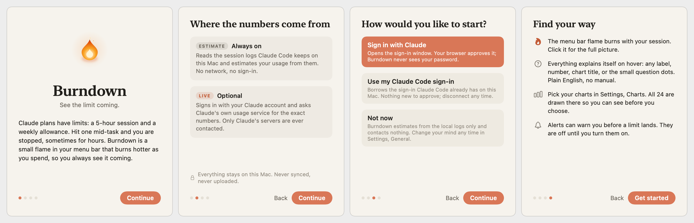
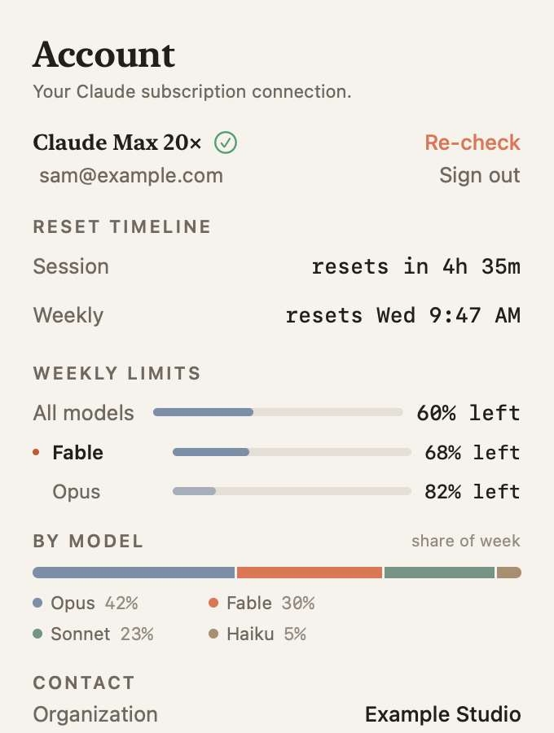
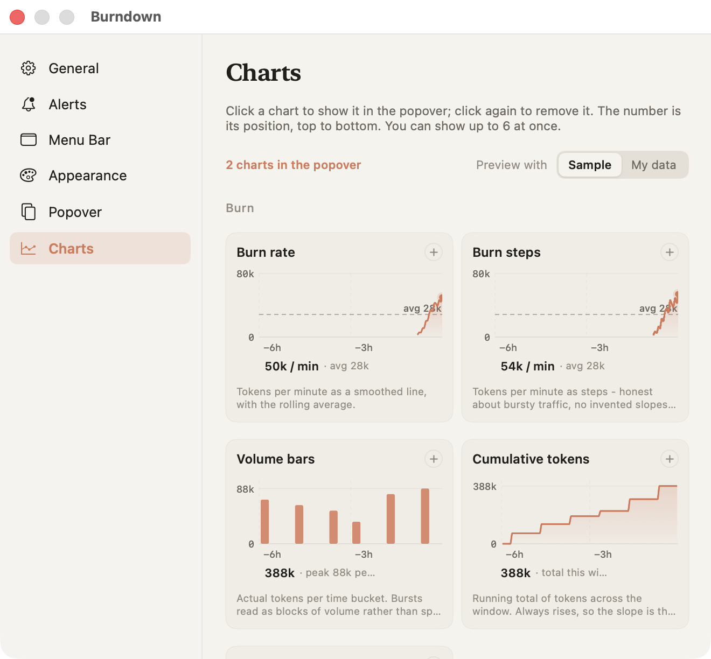
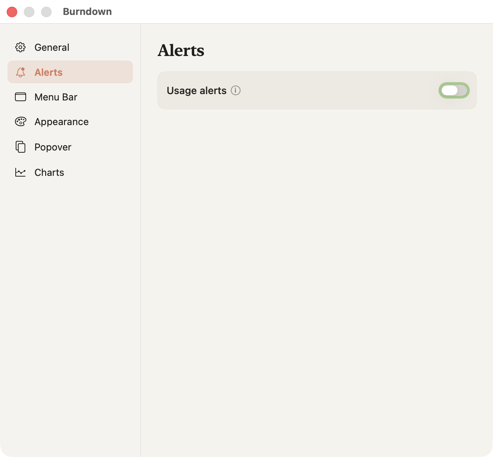
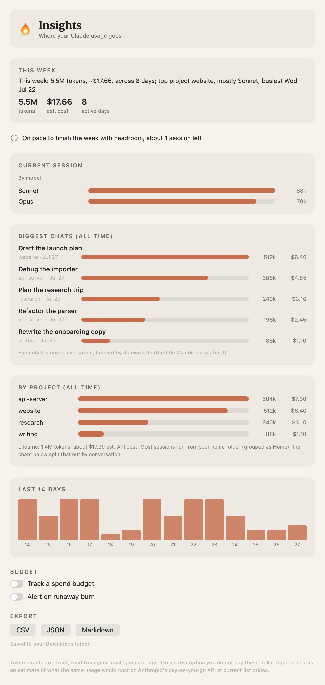
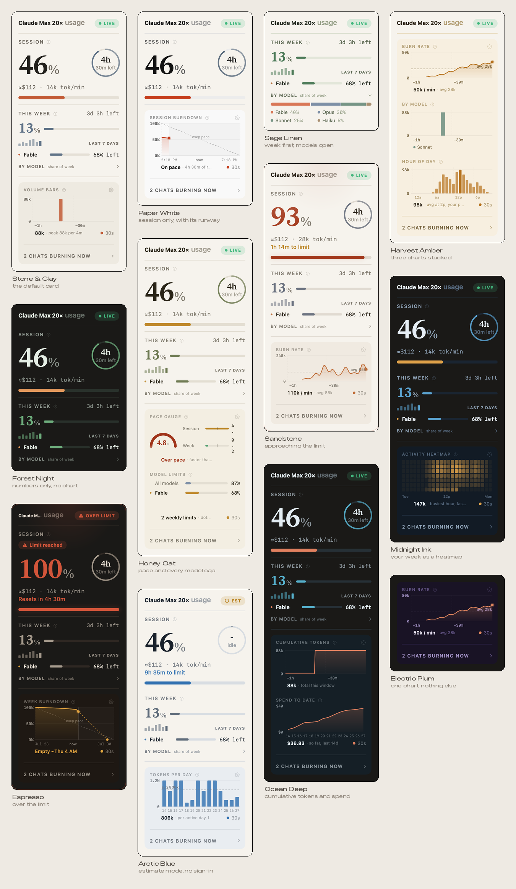
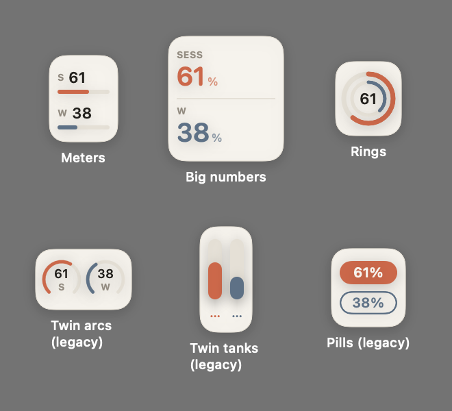
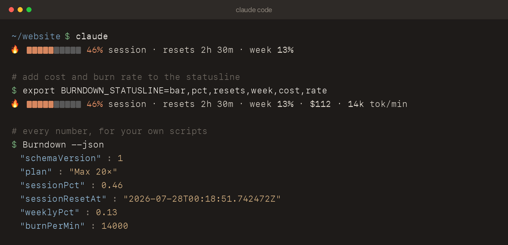

Everything the app does, why it does it, and what to try when something looks wrong. Burndown is free and open source; nothing here is behind a paywall.
Burndown needs macOS 13 or later. Releases are universal, so Apple Silicon and Intel both work.
Homebrew is the easiest route:
brew install --cask --no-quarantine maz0x/tap/burndownOr download the latest release, unzip it, and drag Burndown to Applications.
Or build from source, which needs the Xcode Command Line Tools and takes about a minute:
git clone https://github.com/maz0x/burndown && cd burndown
./build.sh
open Burndown.app--no-quarantine flag above skips this, and building from source avoids it
entirely.
On first launch you get a short welcome tour. You can reopen it any time from the About window.

Settings, General, "Open at login" registers a proper macOS login item, so it survives moving or renaming the app.
Burndown has two sources of truth and always tells you which one you are looking at.
| Mode | Where the numbers come from | Network |
|---|---|---|
| Estimate the default on a fresh install |
The session logs Claude Code keeps under ~/.claude. Token counts are exact;
the percentage against your cap is inferred from your own history. |
None at all |
| Live opt-in |
Claude's own usage service, using your account. These are the same server-side figures behind Claude's usage page, with your exact local token counts layered on top. | Anthropic only |
The badge at the top right of the card names the state: LIVE, EST, STALE, LIMITED, or OFFLINE. Hover it for a plain-English explanation and the age of the data. When the app cannot know something, it says so rather than guessing.
Switch modes in Settings, General, "Live usage from Claude".
Two ways, both reversible.
Signing out really signs out. It deletes the stored token, revokes permission to borrow the Claude Code sign-in, clears the diagnostic log, and turns live mode off. Nothing re-connects behind your back.

Click the menu bar item to open the card. Top to bottom:
Every section has a small question dot; hover it for a plain-English explanation of what you are looking at. Turn the dots off in Settings, Charts, "Explain each section".
Settings, Charts draws every chart with sample data (or your own, with the toggle) so you can see each one before you choose. Click a chart to add it to the card, click again to remove it. The number badge shows its position; the card stacks up to six.

The five groups answer different questions:
| Group | Answers |
|---|---|
| Burn | How hard am I pushing right now: burn rate, steps, volume bars, cumulative tokens, burn distribution. |
| Limits | Will I make it to the reset: session and week burndowns against an even pace, usage percentages, a pace gauge, all model caps. |
| Breakdown | Where did it go: by model, by project, cost per day, top chats, and proportional mixes. |
| Rhythm | When do I work: hour of day, activity heatmap, weekday profile, tokens per day, session blocks. |
| Detail | What is the traffic made of: cache efficiency, input versus output, spend to date. |
Chart options live under the gallery: chart style, the rolling time window (30 minutes to all time), the day span for day-scale charts (7 to 90 days), the hover readout, and the refresh countdown.
Everything in Settings, Alerts is off until you switch it on, and each alert can be enabled independently.

| Alert | Fires when |
|---|---|
| Session / Weekly / Opus / Sonnet threshold | That metric crosses the percentage you picked, once per window, re-arming at the reset. |
| Burn spike | Your rate crosses a tokens-per-minute threshold. Uses hysteresis so it cannot flap, and names the conversation responsible. |
| Forecast | The projected time to your session limit drops below 30 minutes, 1 hour, or 2 hours, while there is still time to wrap up. |
| Runaway burn | Your rate runs far above your own recent normal, measured from a median baseline rather than a fixed number. Built for the agent that keeps spending while you are away. |
| Budget | You are on pace to exceed a spend or token budget you set yourself, per day or per week. Set it in the Insights window. |
| Window reset | A fresh session or weekly window has started. |
| Weekly digest | Optional, once on Mondays: tokens and estimated cost for the week. |
Behavior options cover repeat-while-over, quiet hours, and six original alert sounds. A persistent de-duplication backstop means the same alert cannot repeat at you, even across restarts, and every banner carries a Snooze button.
Right-click the menu bar item, then Insights. It scans your full history, so it takes a moment on first open.

Settings, Appearance. One palette choice recolors the card, charts, widget, and Settings together.

Settings, Popover is an editor for the card itself: every element has a visibility switch, and whole sections can be reordered or hidden.
Settings, Menu Bar chooses the glyph from a couple dozen styles, plus number format, time-to-reset, digit weight, and (for the flame) size, sparks, and smoke.
Demo Mode, in the right-click menu, synthesizes activity so you can watch everything move while you try styles, without spending a token. It is never saved.

Right-click the menu bar item, then Install Terminal Gauge. It writes a small script and points Claude Code's statusline at it, so your limits ride inside every Claude Code session.

The install is reversible: your ~/.claude/settings.json is backed up once before
the first install, and Remove Terminal Gauge deletes only the statusline entry Burndown added.
Compose the line from six segments with an environment variable:
export BURNDOWN_STATUSLINE=bar,pct,resets,week,cost,rate # default: bar,pct,resets,week
export BURNDOWN_ASCII=1 # plain characters instead of the flame and block cellsTwo doors into the same data. Burndown --json prints on demand, and
~/.config/burndown/burndown-live.json is rewritten on every refresh, so scripts can
read it without spawning a process.
{
"schemaVersion" : 1,
"generatedAt" : "2026-07-26T01:26:30Z",
"plan" : "Max 20×",
"sessionPct" : 0.46,
"sessionResetAt" : "2026-07-26T04:00:00Z",
"weeklyPct" : 0.13,
"weeklyResetAt" : "2026-07-29T09:30:00Z",
"burnPerMin" : 14000
}Percentages are fractions between 0 and 1. Times are ISO 8601. Keys are sorted and the output
is byte-stable, so it diffs and caches cleanly. A missing optional field means unknown, never
zero. schemaVersion only changes on a breaking change, and the contract has its own
test suite so it will not drift under you.
| Path | What |
|---|---|
~/.config/burndown/ | All local state, owner-only permissions |
~/.config/burndown/token.json | Your sign-in token, deleted on sign-out |
~/.config/burndown/live.json | Cached usage so the card is instant at launch |
~/.config/burndown/chart-history.json | Chart history |
~/.config/burndown/burndown-live.json | The JSON contract for your scripts |
~/.config/burndown/live-debug.log | Diagnostics, size-capped, never contains your token |
To uninstall: quit Burndown, turn off Open at login, delete the app, and delete
~/.config/burndown. With Homebrew, brew uninstall --zap --cask
maz0x/tap/burndown does all of it.
Burndown checks GitHub once a day for a newer version, and shows it at the top of the right-click menu and in Settings, General. One click installs it: the download is checked against its published SHA-256, its signature is verified, the app is replaced in place, and it restarts. Because the app fetches the update itself rather than a browser, macOS does not quarantine it, so there is no Gatekeeper prompt on updates.
Turn the daily check off in Settings, General. Nothing installs without you clicking.
A menu bar manager such as Bartender or Ice may be hiding it; check there first. If your menu bar is crowded, macOS itself hides items on notched Macs.
Right-click Burndown.app, choose Open, then Open again. This is the ad-hoc signing situation described under Installing.
Live mode is opt-in. Check Settings, General, "Live usage from Claude", and that you are signed in under Account. If you signed out, that also turned live mode off, by design.
STALE means the last successful fetch is older than expected, and you are seeing the last known numbers. LIMITED means Claude's usage service is rate limiting; Burndown backs off and retries on its own. OFFLINE means it could not reach Claude at all. Click the badge to retry.
Day-scale charts follow the Day span setting in Settings, Charts, and can only show history that exists in your local logs. A brand-new install has little history; it fills in as you work.
Only the docked widget needs it, and only so it can follow the Claude Desktop window without lag. Decline it and everything else still works.
Open a discussion for questions or
an issue for bugs. The diagnostic log at
~/.config/burndown/live-debug.log often has the answer, and it never contains your
token.